L'application Dragonavirus
Le principal intérêt de cette application est d'envoyer des messages (textuels ou vidéos) à une personne isolée, qui pourra ensuite vous répondre. En parallèle, le second intérêt de l'app, c'est qu'il y a un système de gamification et d'obtention de points, qui permettra d'une part de s'amuser mais surtout, de donner un sens à vos actions. Plus on envoie de messages, plus on nous réponds, et plus on fait de la coop, plus vous gagnez de points Xp et des items, afin d'avancer dans votre quête pour vaincre le dragon qui représente le virus.
Le projet Restons chez nous
Suite à la situation du confinement dû au Covid-19, nous avons eu pour projet de réaliser une application permettant d'aider les personnes isolées. Tout en y incluant de la personnalisation.
Typeface
Roboto
Outils

Couleurs
Primaire
Secondaire
Monochro.
Dernier parcours client (en prototypage)
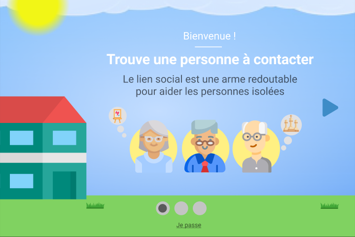
1. Onboarding App
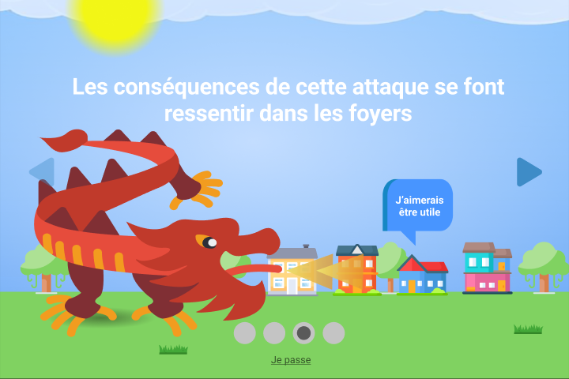
2. Onboarding Game
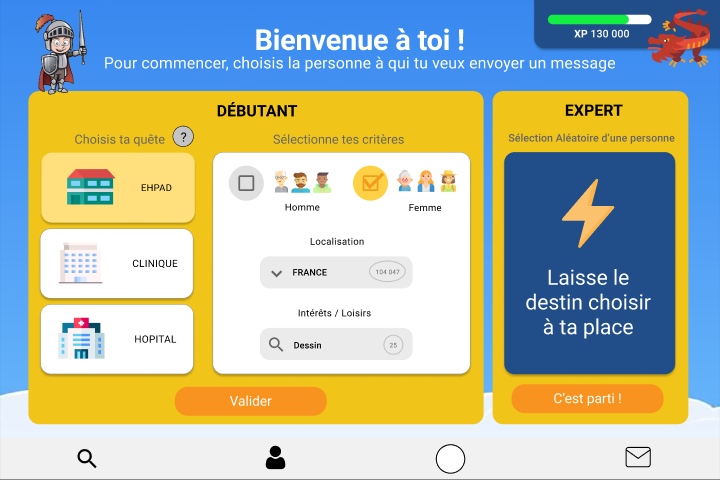
3. Choix de la personne
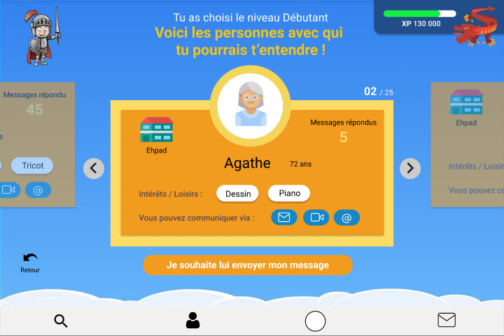
4. Choix
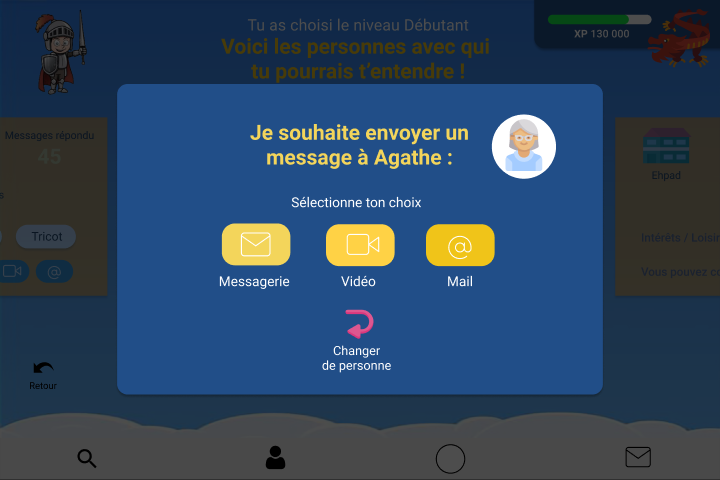
5. Choix pop
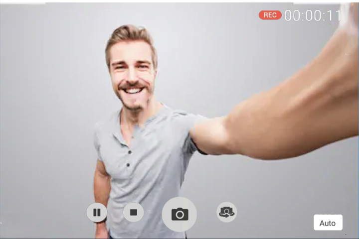
6. Video
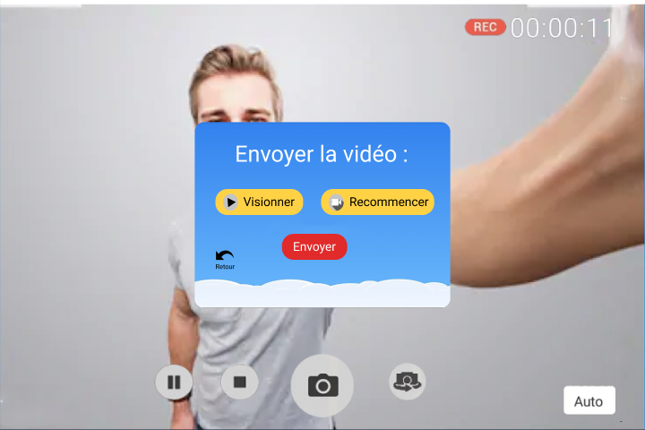
7. Video pop
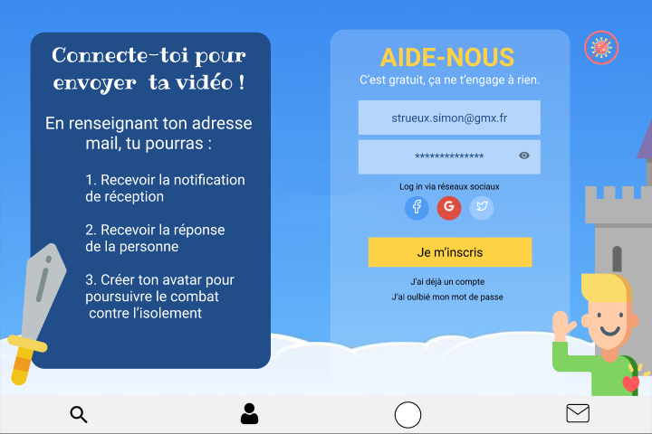
8. Inscription
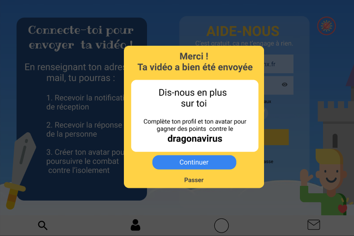
9. Inscription pop
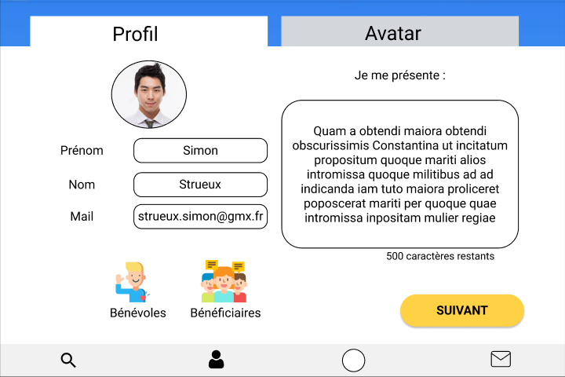
10. Profil
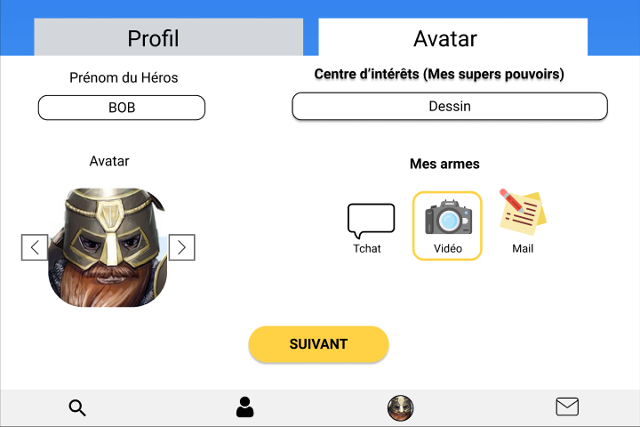
11. Avatar
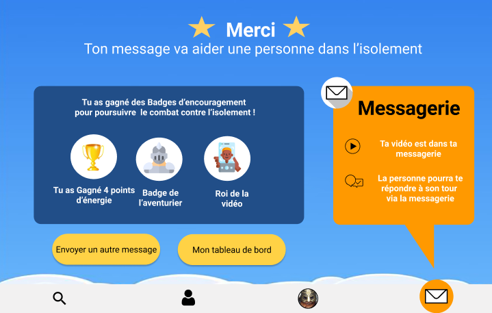
12. Recap Xp du message
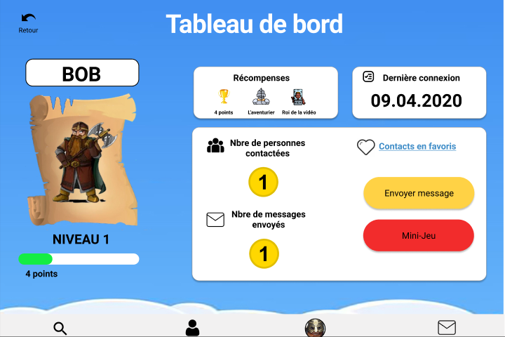
13. Tableau de bord
 14.
14. Immersion jeu
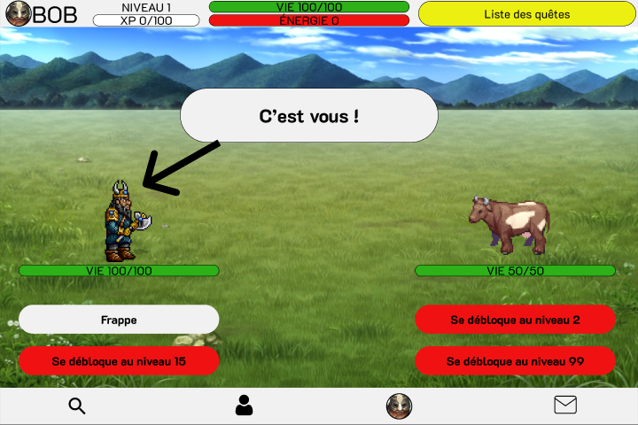
15. Immersion jeu
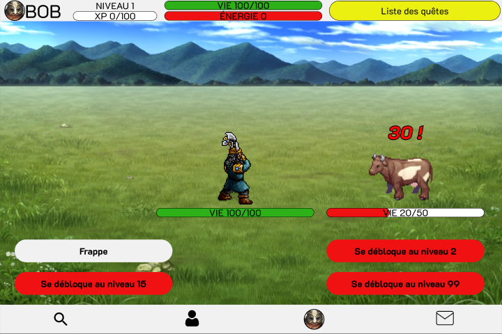
16. Immersion jeu
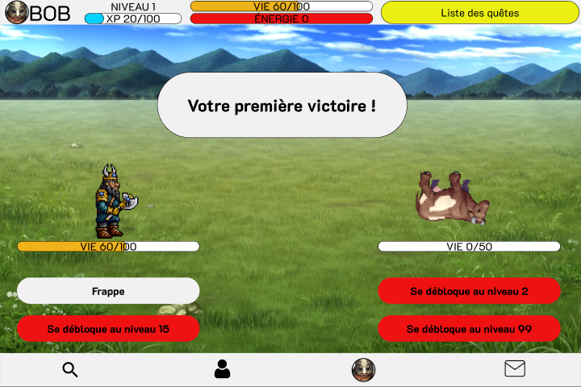
17. Immersion jeu
Envoyer un message vidéo à une dame qui se prénomme Agathe, se situant dans un Ehpad. Cette personne a le même centre d'intérêt que toi, le dessin. Une fois le message envoyé, il faudra créer ton profil et si tu le souhaites, créer ton avatar. Cet avatar aura les caractéristiques d'un nain et il s’appellera Bob et aura la même passion que toi, le dessin.
Le formateur choisit les membres du groupe. Suite à un tour de table, nous votons sur les rôles de chacun. Sur ce projet, Alex est décideur, je suis intervieweur et Marie est facilitatrice.
Alex
Décideur
 Alice
Alice Ezahra
Ezahra JF
JF Intervieweur
 Marie
Marie Facilitatrice
Suite aux feedback des personnes interviewées durant nos tests utilisateurs et à notre design critique, voici les points positifs et négatifs du projet, ainsi que les modifications à appliquer pour une prochaine version.
Encore merci à chaque personne de l'équipe pour leur bienveillance, leur courage et leurs efforts. Grand Big up à Marie sans quoi le projet aurait été très certainement différent. Alex, tu es un dingue ! Simulation de jeu sur Figma, chapeau bas.

{kind=link}
{kind=link}
{kind=link}
{kind=link}
{kind=link}
{kind=link}
{kind=link}
{kind=link}
{kind=link}
{kind=link}
{kind=link}
{kind=link}
{kind=link}
{kind=link}
{kind=link}
{kind=link}
{kind=link}
{kind=link}
{kind=link}
{kind=link}
{kind=link}
{kind=link}
{kind=link}
{kind=link}
{kind=link}
{kind=link}